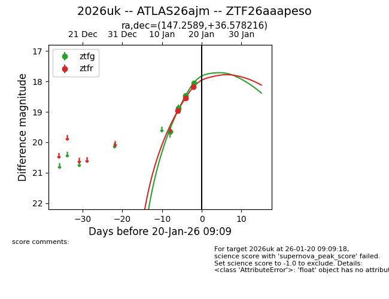
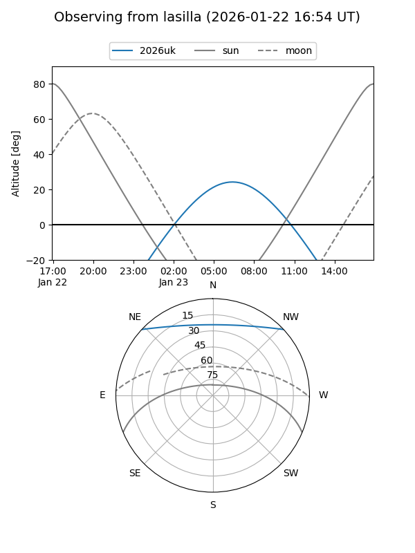
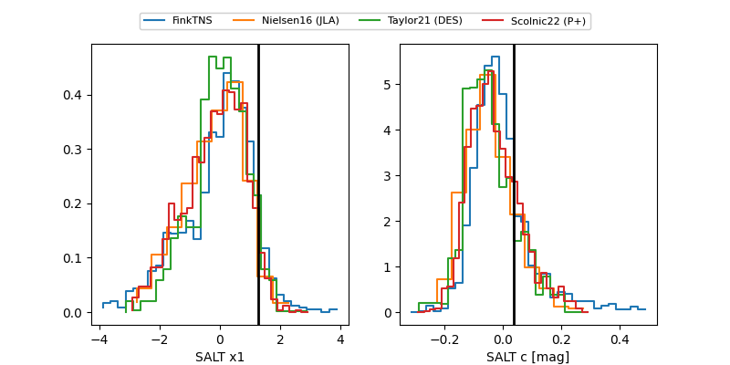

2026uk
Target 2026uk at 2026-01-16 21:15
Aliases and brokers:
FINK: link
Lasair: link
ALeRCE: link
TNS: link
YSE: link
alt names
ZTF26aaapeso (ztf,fink_ztf)
2026uk (tns,yse)
ATLAS26ajm (atlas)
Coordinates:
equatorial (ra, dec) = 147.2589,+36.57822
equatorial (HMS+DMS) = 09:49:02.13,+36:34:41.58
galactic (l, b) = (187.3916,+50.51340)
Flags:
Photometry:
last ztfg=18.47, ztfr=18.56
3 ztfg, 1 ztfr detections
Lightcurve

Visibility


Additional plots
